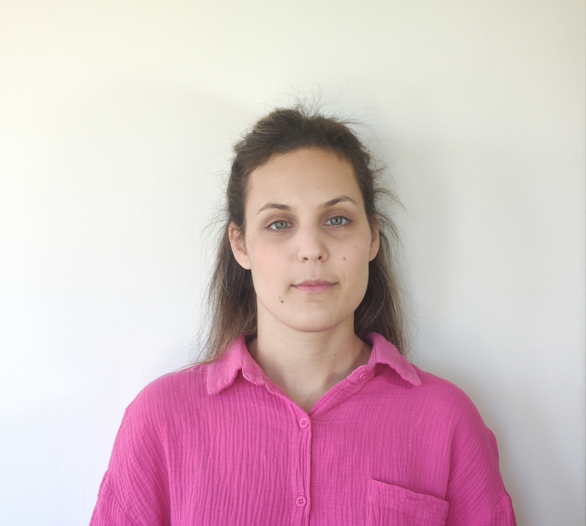

Chrysoula Voutrya

Professional Experience
07/2022 – Present
IT Employee
Union Optic - Shamir - EssilorLuxottica
Responsibilities:
- Employee support (Hardware: PCs, printers, tablets, mobile devices, Software: Windows, Office365, setting up computers for new users)
- Website support (WordPress)
- Customer support (installation, demonstration, and troubleshooting of ordering client software and ophthalmic measurement software)
- Graphic design (CorelDraw, Adobe Illustrator)
- Social Media management (Instagram, Facebook, HubSpot)
- Presentation creation (PowerPoint)
- Translation English-Greek
- Creating necessary files for laser engraving machines (Schneider, Keppets, LaserOp)
- Creating files for stamp machine (Teco Machine)
07/2019 – 07/2022
Office Employee
Union Optic - Shamir – EssilorLuxottica (Pylaia)
Responsibilities:
- Invoicing, orders preparation and shipping
- Warehouse management
- Customer support
09/2018 – 07/2019
Dietitian – Nutritionist
BODYfitStore (Thermi)
Responsibilities:
- In charge of dietetics office
- Client, contract and erp s/w management
- Store setup for nutritional supplements
- Sales, cashiering, orders, inventory of Food supplements
- Customer support
01/2017 – 09/2017
Secretary – Invoicing – Food Labeling
Food Control Laboratory "Petros Androulakis & Partners"(Thessaloniki)
Responsibilities:
- Revenue and expense management, invoicing (Pylon Explorer)
- Customer support
- Supply management, receiving and registering samples
- Basic training in food labeling
- Customer support
11/2012 – 12/2016
Saleswoman and Assistant Price Changes Manager
Toy and baby products retailer – JUMBO (Thessaloniki store, Florida Park IKEA)
Responsibilities:
- Product management, stock management, customer service
- Daily price changes, updating staff's mobile devices, inventories, shortages and surpluses
Education
2019 – present:
Computer Science Post Graduate Student
Hellenic Open University
2024 – Present:
HTML, CSS
Udemy
2023:
SQL, JAVA, PYTHON
Sololearn
2022:
Computer & Network Technician
UCert
2019:
The Fundamentals of Digital Marketing
Google Digital Garage
2018:
Specialization in Sports Nutrition for Performance Enhancement
International Society of Sports Nutrition (ISSN), USA
Specialization in Clinical Nutrition
National and Kapodistrian University of Athens
2015:
Graduate of the Department of Nutrition and Dietetics
School of Agricultural Technology and Food and Nutrition Technology, TEI Thessaloniki
(Licensed to practice as a dietitian)
2014:
Six-month internship at the food control laboratory "Petros Androulakis & Partners"
Skills
Languages
- English (Proficiency, C2 level)
- German (Zertifikat, B1 level)
Computer
- OS: Windows, Android
- Office 365
- Atlantis ERP
- Corel Draw, Adobe Illustrator
- SQL, HTML, CSS, JAVA
Driving License: